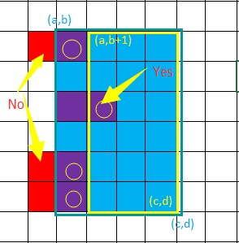
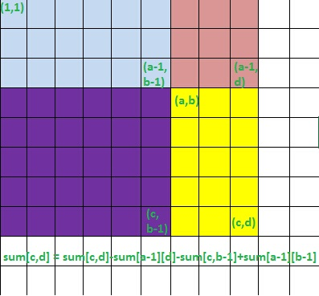

Zhy's Blog~

Codeforces Good Bye 2015
2015最后一场CF，Div.1，Div.2混战，题目个人感觉不太对胃口，偏难了吧。
拿大号(Des_Payfor)怒跪一场，不过还好不太遗憾，D题虽然没交上，但最终还是TLE的，是在下输了...
根据这两年参加年终大战的经验→_→混战容易涨分...
-
611A-New Year and Days
题意：
翻阅日历，求2016年周X有几个，或求X号有几个。
解法：
本应该是个很简单的题，可能参赛的压力都比较大，博主7分钟交了3次才过pretests，而这个时候竟然才只有一小部分人过了pretests，汗(-__-)||。
需要注意的是——2016是闰年，所以2月29天，一年366天。366%7=2，所以只有周五(2016.01.01)和周六(2016.01.02)比其他周X多一天；X号就可以随便求了，注意2016.02.29即可。
抱着试一试赚回脑残罚时的态度看了一遍Room里的情况，竟然收获不小，各种没有注意闰年的或者是注意闰年还打表打错的，甚至还有一个多小时交的还搞不明白输入的...
code -
611B-New Year and Old Property
题意：
[a,b]范围内二进制表示中只有一个非前导0的数的个数。
解法：
10^18，稳稳的64位整数以内，也就是说二进制位也就64个，枚举一下符合条件的数——二进制几位，哪一位是0，并检查是不是在[a,b]中即可。
code -
611C-New Year and Domino
题意：
骨牌的规格是1 * 2或者2 * 1的，q次询问——[(r1i,c1i),(r2i,c2i)]的区块内能放一个骨牌的位置数。
解法：
二维前缀和的应用。不过由于横竖摆放的性质不同，需要分开处理。
首先，求1 * 2 的骨牌的前缀和矩阵heng[i][j] (1<=i<=h,1<=j<=w)表示[(1,1),(i,j)]这个矩阵内能放的1 * 2的骨牌数量。
要求二维的前缀和，就要先把一维的处理出来，设tmp[i][j] 表示第i行前j个格子，也就是[(i,1),(i,j)]能放下的1 * 2的骨牌数量，这就是普通的前缀和，用以下代码即可轻松求出，非要说是dp我也没什么好争辩的。
for (int i = 1;i <= N;i++)
for (int j = 1;j <= M;j++)
if (g[i][j] == '.' && g[i][j-1] == '.') tmp[i][j] = tmp[i][j-1]+1;
else tmp[i][j] = tmp[i][j-1];
然后有了tmp[i][j]，就可以得到heng[i][j] = heng[i-1][j]+tmp[i][j]。
对于2 * 1的骨牌的处理类似，可得到一个shu[i][j]的前缀和矩阵，这些预处理的复杂度均为O(N^2)。
此时考虑如果求矩阵[(a,b),(c,d)]内的1 * 2骨牌位置数，要注意矩阵的第一列不在考虑范围内，因为我们之前求出的heng[i][j]其实是说1 * 2的骨牌落脚点在(i,j)，但在[(a,b),(c,d)]内，落脚点不可能是第一列[(a,b),(c,b)]，可参考下图。对于2 * 1的情况的求解，则是不能考虑第一行。

利用前缀和在O(1)时间内求出对区间[(a,b),(c,d)]的询问，先考虑1 * 2的骨牌，首先b++去掉第一列，然后由容斥原理——ans += heng[c][d]-heng[a-1][d]-heng[c][b-1]+heng[a-1][b-1]；同理求2 * 1的情况，先a++去掉第一行，然后ans += shu[c][d]-shu[a-1][d]-shu[c][b-1]+shu[a-1][b-1]，参考下图。

code
-
611D-New Year and Ancient Prophecy
题意：
将一个数字串切成若干段，使之呈一个严格上升的序列。
解法：
显然dp，方程dp[i][j] = ∑dp[i][k]，k<j<=i, s[k..j-1] < s[j..i]，dp[i][j]表示前i个数字以[j..i]为最后一段的情况数。当然，显然如果枚举k的话这个做法是O(N^3)的，必然超时。有若干策略（雾）（利用前缀和）可以将其优化成O(N^2)或者O(N^2 * logN)的（博主下面提供的TLE的代码是O(N^2 * logN)的做法，虽然出题人说这个复杂度可以，但是可能是我的写法的常数导致了TLE，仍需优化，仅供参考吧）。
然后还有一个问题，就是比较字符串的时候需要快速处理，所以就有了做另一个dp的预处理，使比较字符串的工作将为O(1)的操作，详见代码。
目前还是移步官方题解吧。详细题解等博主哪天想AC这道题的时候再说吧（懒癌卧床中，勿扰~）。
code -
611E-New Year and Three Musketeers
题意： 待续待续
解法：
code